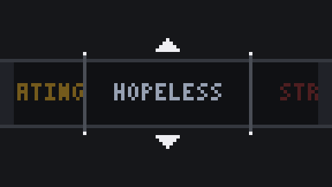
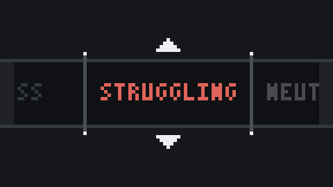
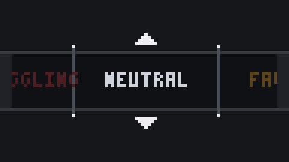
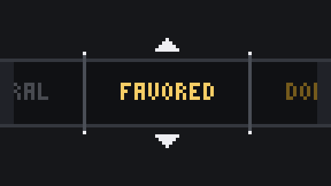
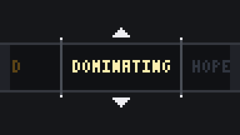
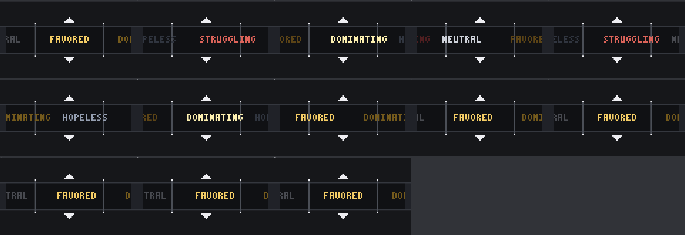
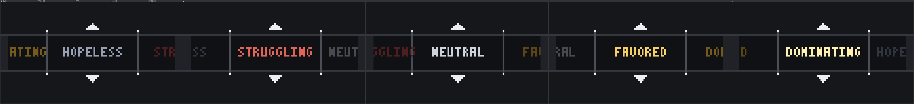

HOPELESS< 20% · 19 KB

Cinco GIFs, um por rótulo de forecast_label(). Canvas
96×54, escala inteira 5×, nearest-neighbor, fonte 3×5 autorada.
Os nomes passam da esquerda para a direita e travam no visor em
0,87 s.
HOPELESS< 20% · 19 KB

STRUGGLING< 40% · 19 KB

NEUTRAL< 60% · 19 KB

FAVORED< 80% · 18 KB

DOMINATING≥ 80% · 19 KB


